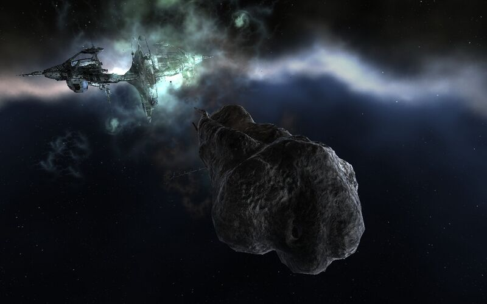

This is a thrill for me to have the opportunity to interview Mark726 of EVE Travel. In all honesty, and I don’t think I’ve ever told him this, his blog was what inspired me to start my own and record my travels through New Eden. So first off, I wanted to take this opportunity and thank Mark726 for his inspiration, his support, and his fantastically well done blog.
If you’re not aware of or heard of EVE Travel, then there’s just no hope for you! Especially if you consider yourself an explorer or traveler of New Eden. Of course I jest, because I can’t imagine that there’s not a single capusleer who’s not, but you never know. There’s no comparison between our blogs, because I’ve always thought of Mark726’s site as the National Geographic of New Eden, where mine’s more like the Griswold Family Vacation! 😉 His level of professionalism and pure quality is something I strive to achieve with my own.
If you’ve not visited EVE Travel, then you’re in for a real treat, go check it out, find something that interest you, then go see it for yourself in game. You won’t regret it!
What attracted you to EVE Online and how long have you played?
I’ve been a player since December 2007 (thinking about that depresses me at times, heh). I joined almost on a whim: I had seen a number of advertisements while at college that year. I did a bit of research (to confirm that it was, in fact, a game about space) and decided to try it as I got home for winter break. That delay ended up being a pretty good idea on my part: I just missed the boot.ini fiasco from the Trinity fiasco because of it. Other than that, I had no real idea what I was getting myself into.
How would you describe your characters career path?
I was always sort of a lone wolf. I stayed with the Center for Advanced Studies for quite awhile, plying the spacelanes on my own. A few friends I had met in various channels got me into their corp for a while, but even then I didn’t really do anything corp-related. I finally started my own corporation to help with Project Compass, part of the Arek’Jaalan initiative. Even after I finished my Project Compass analysis, I’ve stuck with Project Compass Holdings ever since.
What attracted you to explore New Eden? What is your goal and have you achieved it? If not, are you still working towards your goal, do plan to continue, or what are you currently doing?
EVE Travel started out pretty simplistically. I was bored one day and I wanted to see some sights. I tried searching for a comprehensive list, and couldn’t find one. EVE Travel spurred from there. My goal is to create a comprehensive catalog of all notable landmarks in game, be they mission sites, player-created sites, or things that CCP has put there. I intend to keep going until I can’t find anymore, and that hasn’t quite happened yet (though after 150 or so sites, the rate of discovery has definitely slowed to a trickle: if anyone knows anything I’ve missed please let me know!)
What is the name of your favorite ship that you enjoy flying the most while exploring? Why is it your favorite? Would you mind sharing your fit?
Depends on where I’m going. If I’m sticking in high or low sec, I stick with what is probably my more well-known ship: a Buzzard-class, Professor Science. It’s a quick little thing, excellent for exploration jaunts. If I’m heading to null sec, I swap to my Tengu-class, Scientia, to help me avoid bubbles.
During your research and travels, what has been the most interesting fact, amazing sight, or other aspect of New Eden that surprised you?
It’s the little touches that are put into New Eden that really tickle me pink, so to speak. One of the lesser known sites (it’s not marked by a beacon) is the ship wash in Ashab (Planet 2, Moon 1). It makes total sense that capsuleers especially would often pride themselves on keeping their ships spotless and shiny. Would I, in a million years, ever have actually thought of making one? Nope. There are cargo pads with little boxes of goods, shipyards with moving hands that go up and down. There’s a whole UNIVERSE out there for people who are looking. It’s these small touches that keep drawing me back.
What have you learned or what advice would you give to someone interested in exploring New Eden?
Just go and do it. It doesn’t need to be a big to-do; even new players can see a lot of the sites that I profile since the largest chunk of them are in high security space. Just take something small and fast and go. Even in low sec, a small, fast ship will get you where you need to 9 times out of 10, even without a cloak. It’s an excellent change of pace!
Do you have a favorite image that you wouldn’t mind me posting and sharing from your explorations?
Oooooph choosing a favorite image is tough. I’ve seen a lot of awesome ones. But I always keep coming back to the Infested Comet Remains in the Contested Canyon of Rust in Alsottobier. It’s a derelict station inside a comet!

Infested Comet Remains, Contested Canyon of Rust, Alsottobier
Comments
"I’ve been a fan of Eve Travel since I first started playing the game. It’s my primary place find out more about a site I have come across and I also always check it out when when I’m looking to visit someplace new." - Motoko Rei
{kind=link}
{kind=link}
{kind=link}
{kind=link}
{kind=link}